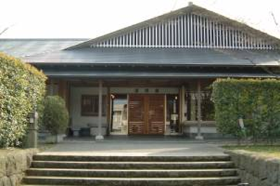
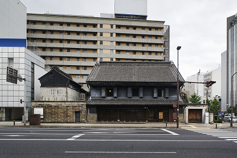
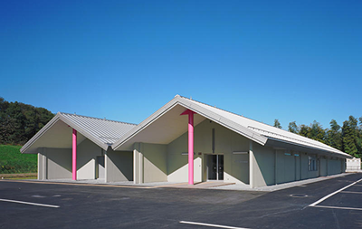
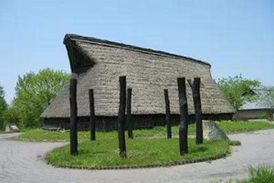
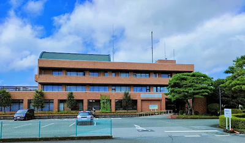

宇都宮市内の文化財展示施設のご案内
宇都宮市内には、宇都宮城址公園のほかにもたくさんの文化財があります。
5か所すべてを回った方には、オリジナルのクリアファイルをプレゼント！
-

宇都宮城址公園 清明館
- 栃木県宇都宮市本丸町1-15
- ☎ 028-638-9390
- JR「宇都宮駅」西口から徒歩20分
東武鉄道「東武宇都宮駅」から徒歩15分
関東バス「馬場町」停留所から徒歩10分
-
-

旧篠原家住宅
- 栃木県宇都宮市今泉1-4-33
- ☎ 028-624-2200
- JR「宇都宮駅」西口から徒歩5分
東武鉄道「東武宇都宮駅」から徒歩25分
-
-

とびやま歴史体験館
- 栃木県宇都宮市竹下町380-1
- ☎ 028-667-9400
- LRT「飛山遺跡」停留所から徒歩20分
JRバス関東「JA清原支所前」停留所から徒歩5分
- 公式ホームページ
-
-

うつのみや遺跡の広場 資料館
- 栃木県宇都宮市上欠町151-1
- ☎ 028-659-0193
- JR「鶴田駅」から徒歩45分
関東バス「聖山公園入口」停留所から徒歩10分
-
-

上河内民俗資料館
- 栃木県宇都宮市中里町181-3
- ☎ 028-674-3480
- E4 東北自動車道 「上河内スマートIC」から東へ5分
E4 東北自動車道・E81 日光宇都宮道路
「宇都宮IC」から北へ20分
-